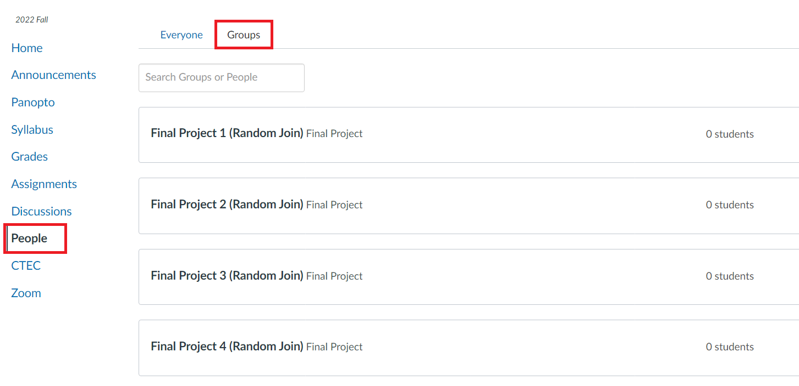
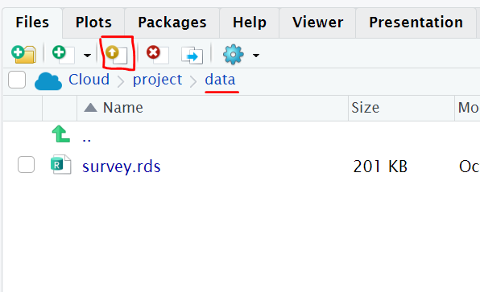

Final Project
The final project is to be completed in groups of 3-5. Why? 1) Group work and collaboration is a good life skill. 2) There is no possible way we can grade 150 projects by the time grades are due.
The final project is due on Sunday March 5th 11:59pm. Groups are expected to submit their project electronically to Canvas, similar to how you submit your work for daily activities. You will type your project directly into a qmd file and knit an html document. You should submit your .qmd and .html file (and datset if you chose one other than the one I provided). Only ONE person from the group needs to submit the project. Make sure everyone’s name is on the project.
The project should be in complete sentences within the context of your dataset when appropriate. Students are expected to also show their work (i.e., include your R code). Your target audience is the grader and myself, we want to see your code and the output of your code.
Choose a Group
You must join your group on Canvas! Grades are linked to these groups - I will not hunt you down. To get a grade you must be in a group. This is 10% of your grade, you do not want a 0 for the project. On Canvas go to the People tab, and select Group to add yourself to a group.
Everyone in your group must agree to be in your group. I should not be getting emails stating “Jane Doe is in my group and we don’t know who that is”. If you do not know anyone in the class, Groups 1 -5 are titled “Random Join”. Anyone can join them. You can communicate with your group through the Canvas group, make a group on Campuswire, or exchange email.

Choose a Dataset
For anyone complaining that we don’t use enough “real-life” data examples this is your chance!
Option 1:
You may use a dataset that I provide. This dataset will be pre-loaded and located in the RStudio Cloud Project.
- Class Survey Data: You cannot use any analysis that is an existing question on your exam. You may think of a similar question but it should not be identical. You must use the full dataset, the midterm and final remove certain columns and observations to reduce time computations. See the codebook for an explanation of the variables.
Option 2:
As a group you can pick a dataset of interest to explore! This can be any dataset of your choice that meets the following criteria:
At least 100 observations
At least 10 variables
The variables should be a mix of both categorical and numeric
At least one variable that can be used as a reasonable response variable for regression
You may not use data that has previously been used in any Activity
You may not use any data that is a part of the ISDSdatasets, ggplot2, or palmerpenguins packages.
If you choose your own dataset, you will need to upload your data to the RStudio Cloud Project. Under the Files Pane, click on the “data” folder, then click the “upload” icon.

Where to find data?
Social Science Data Resources: A LibGuide maintained by Anne Zald from the Northwestern library; this page provides curated links to a number of data sources by subject.
Kaggle: Kaggle offers aggregated datasets, but it’s a community hub rather than a search engine. Kaggle launched in 2010 with a number of machine learning competitions, which subsequently solved problems for the likes of NASA and Ford. It has since evolved into a renowned open data platform, offering cloud-based collaboration for data scientists, as well as educational tools for teaching artificial intelligence and data analysis techniques… plus, of course, tons of great datasets covering almost any topic you can imagine.
Google Dataset Search: Launched in 2018, Google Dataset Search is like Google’s standard search engine, but strictly for data. While it’s not the best tool if you prefer to browse, if you have a particular topic or keyword in mind, it won’t disappoint. Google Dataset Search aggregates data from external sources, providing a clear summary of what’s available, a description of the data, who it’s provided by, and when it was last updated. It’s an excellent place to start.
U.S. Census Bureau: the U.S. Census Bureau publishes reams of demographic data at the state, city, and even zip code level. It is a fantastic data set for students interested in creating geographic data visualizations and can be accessed on the Census Bureau website. Alternatively, the data can be accessed via an API.
Data.gov: In 2015, the US Government made all its data publicly available. With over 200,000 datasets covering everything from climate change to crime, you can lose yourself in the database for hours. For a government website, it has some surprisingly user-friendly search functions, including the ability to drill down by geographical area, organization type, and file format. Search results are also clearly labeled at federal, state, county, and city levels.
FiveThirtyEight: If you’re interested in data at all, you’ve almost certainly heard of FiveThirtyEight; it’s one of the best-established data journalism outlets in the world. They write interesting data-driven articles, like “Don’t blame a skills gap for lack of hiring in manufacturing” and “2016 NFL Predictions”. What you may not know is that FiveThirtyEight also makes the data sets used in its articles available online on Github and on its own data portal.
FBI Crime Data Explorer: If you’re fascinated by crime, the FBI Crime Data Explorer is the one for you. It provides a broad collection of crime statistics from a variety of state organizations (universities and local law enforcement) and government (on a local, regional, and state-level). Pull data on hate crimes, officer assaults, homicides, and more. It also includes some helpful user guides to support data navigation.
Awesome Public Datasets: This github hosts a library of awesome, public datasets! They are all sorted by category and link you straight to the hosting website.
Data is Plural: Jeremy Singer-Vine collects awesome data sets across multiple sources. If you’re interested in getting data sets straight to your inbox, you should consider signing up for his newsletter.
Sports Reference: “Our Primary Aim is to answer our users’ questions with the easiest-to-use, fastest, and most complete sports statistics anywhere. If we have some fun in the process, that’s good too.”
The World Bank: The World Bank is a global development organization that offers loans and advice to developing countries. The World Bank regularly funds programs in developing countries, then gathers data to monitor the success of these programs. You can browse world bank data sets directly. The data sets have many missing values (which is great for cleaning practice).
Uniform Crime Reporting Data: The UCR Program collects statistics on violent crime (murder and non-negligent manslaughter, rape, robbery, and aggravated assault) and property crime (burglary, larceny-theft, and motor vehicle theft). By congressional mandate, arson was added as the eighth Part I offense in 1979. Arson statistics are not available for access on this site. By using the table-building tool, users can specify offenses, locality (city, county, state), and year(s).
US Food and Drug Administration: Drug approvals and databases, including therapeutic equivalence evaluations for approved multi-source prescription drug products.
National Center for Education Statistics: The primary federal entity for collecting and analyzing data related to education.
National Weather Service: Climate data, including past weather conditions and long-term averages, from specific observing stations around the United States.
National Oceanic and Atmospheric Administration: This covers geophysical, atmospheric, and oceanic data. They are currently the world’s largest provider of climate and weather information.
Facebook Graph API: The Graph API is the primary way to get data into and out of the Facebook platform. It’s an HTTP-based API that apps can use to programmatically query data, post new stories, manage ads, upload photos, and perform a wide variety of other tasks.
Spotify API: Discover the millions of tracks, artists, or albums on Spotify in the user’s local market or a specific Spotify market.
Inside Airbnb: Inside Airbnb offers different data sets related to Airbnb listings in dozens of cities around the world.
Yelp Open Dataset: Yelp maintains a free dataset for use in personal, educational, and academic purposes. It includes 6 million reviews spanning 189,000 businesses in 10 metropolitan areas.
Twitter API: Twitter has a good streaming API, and makes it relatively straightforward to filter and stream tweets. You can get started here. There are tons of options here — you could figure out what states are the happiest, or which countries use the most complex language. If you’d like some help getting started working with this Twitter API, check out the tutorial here.
Project outline
Once you have chosen your dataset you will need to conduct an analysis and create a report. This is a report, meaning anytime you have code you should be explaining what you are doing before the code and any conclusions/findings that result after the code. In other words, there should not be random plots/code without any explanation.
Introduction: Should introduce your dataset, where the data came from, why it is of interest, and any other general introductory statements. Cite your data link if necessary.
EDA: Here you should describe your data. How many variables are in your dataset? How many observations? Are there any missingness issues and why might that be the case? Are there any potential data issues such as impossible/weird values? You will need to create a minimum of 2 graphics to explore your data. You cannot use the two same graphs (ie: cannot do 2 scatterplots). Each graph should have wrangling code and calculations to support the graph.
Regression: Choose any 2 variables to predict a numeric variable. Write out the equation to your model and interpret any coefficients.
Confidence interval: Develop a confidence interval related research question. Construct you confidence interval, state your confidence level and appropriately interpret in the context of the problem.
Hypothesis test: Develop a hypothesis test related research question. State your null and alternative hypothesis, specify your alpha, perform the hypothesis test, and appropriately interpret in the context of the problem.
Conclusion: State any concluding remarks.
Note: At least one of the confidence interval or hypothesis test must be a “difference” research question (ie: difference in means or difference in proportions). The confidence interval and hypothesis test must be answering different research questions.
Project rubric (50 points)
| 1 | 2 | 3 | 4 | 5 | |
|---|---|---|---|---|---|
| Neatness, Organization, Introduction, Conclusion | Use complete sentences; minimal typos; names; headers formatted correctly; suppress warning or messages; introduction and conclusion present | ||||
| EDA: Explanation | Thoroughly explored your data using at a minimum the criteria in the project outline. | ||||
| EDA: Exploration 1 | Simple plot/wrangling AND improper explanation AND major error with code/data use | Simple plot/wrangling OR improper explanation OR major error with code/data use | Used a graph and appropriate data wrangling to support the graph. Proper explanation and introduction to the exploration. Sufficiently complex, you are showcasing what you learned this quarter. | ||
| EDA: Exploration 2 | Same criteria as above. Must be a different type of plot. | ||||
| Regression (x2 pts) | Incorrect interpretation OR 2 issues | Stated the model goal. Used multiple regression model. Stated the model equation. Interpreted the coefficients in the context of the problem. | |||
| CI (x2 pts) | Incorrect interpretation OR 2 issues | Stated the research question of interest. Stated CI level. Confidence interval is correct. Interpretation in the context of the problem | |||
| Hypothesis test (x2 points) | Incorrect interpretation OR 2 issues | Stated the research question of interest. Stated alpha level. Defined H0 and HA using proper notation. Hypothesis test conducted correctly. Interpretation in the context of the problem |
**Sufficiently complex exploration can mean many things. It can mean doing data wrangling before the plot to narrow down the data of interest or it can mean doing a bi-variate exploration (2 variables or more) and explaining how the variables relate. Ex: Simple exploration: histogram of a single variable using your entire dataset and calculating the mean and standard deviation. Complex exploration: faceting a histogram by a categorical variable and calculating summary statistics by category to explain how different categories vary.
**Be a problem solver. If you don’t know how to write a regression equation or hypothesis copy an example from an activity and modify for your problem.